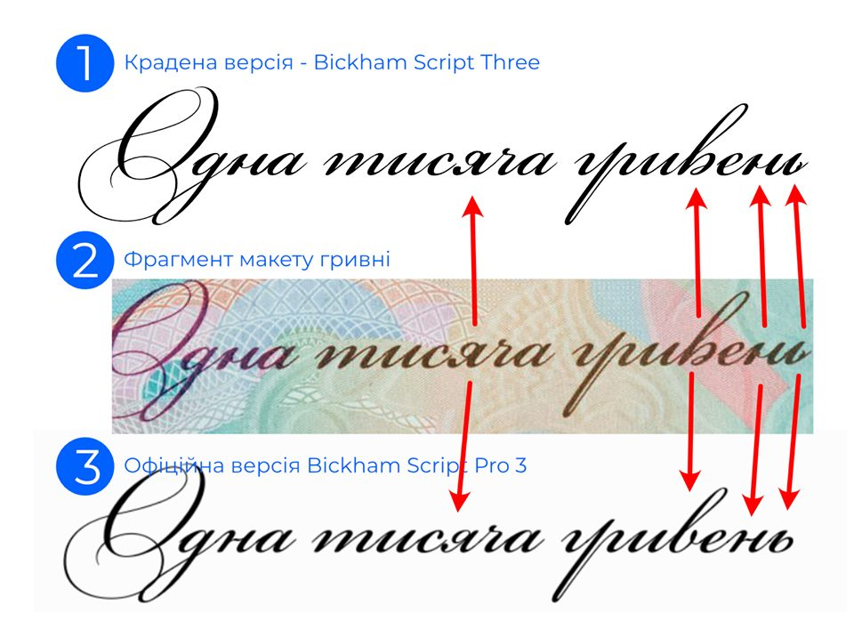
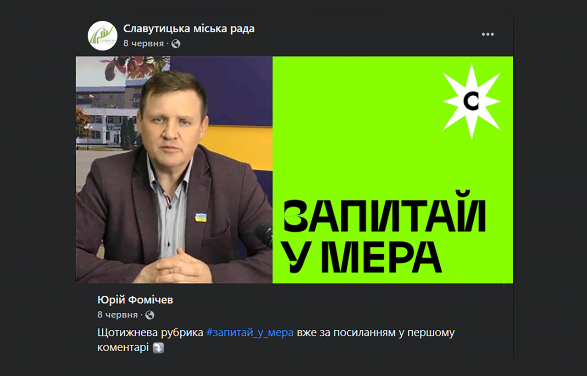
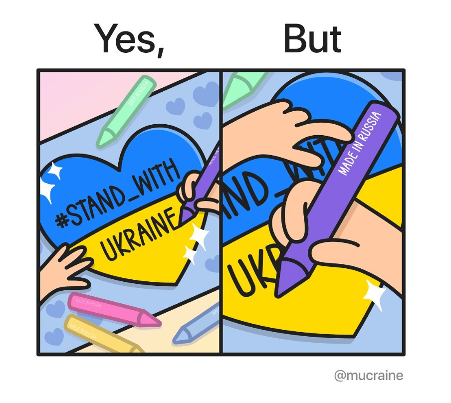
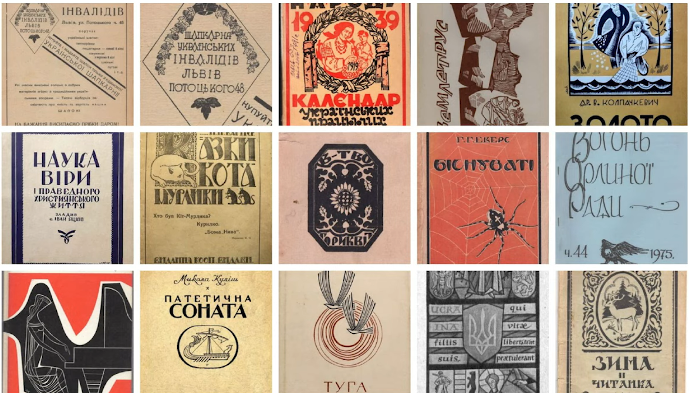

І свого не цураймось: українські шрифти для повсякдення і бізнесу
Попри всі зусилля, спрямовані на блокування ворожого інформаційного впливу, типографія залишається «білою плямою», крізь яку може непомітно проникати російська продукція. Та й не кожний здатен розпізнати російський шрифт на голе око.
Оскільки відмовлятися від усього російського є нині нагальною потребою, ми хочемо дізнатися — чи достатньо у нас шрифтів українського виробництва, щоб замінити продукцію агресора та водночас підтримати своїх шрифтарів?
Дефіцит триває?
В Україні бракує якісно адаптованих під кирилицю аналогів популярних шрифтів. Через цей дефіцит російські автори вже кілька десятиліть домінують у галузі кириличної типографії. Або навпаки — через те, що була навала шрифтів російського виробництва, в Україні не з’являвся попит на «своє».
В будь-якому разі ситуація склалася дивна: український бізнес та навіть державні структури послуговуються переважно закордонним шрифтовим продуктом, який часто буває неякісний або навіть вкрадений.
Скандал з краденим шрифтом для банкноти ₴1000 стався 2019 року
Міська рада Славутича використала в комунікаціях шрифт російського виробництва, що спричинило засудження у соцмережах
Завдяки цьому мему можна описати ситуацію, яка склалася в кириличній типографії
МАРГО ГАРЯЖА
Співзасновниця Büro 22
З кирилицею завжди були проблеми. А після відмови від усіх російських ресурсів, зокрема від сайтів з пошуку шрифтів, знайти щось круте стало реально складно. До того ж не можна собі дозволити використовувати один шрифт типу «Київ» у декількох різних проєктах. Треба розуміти, що занадто виразні шрифти поглинають ідентичність та концепцію дизайну.
Багато крутих молодих європейських студій роблять тільки латиницю. Працюючи з логотипами трапляється таке, що ми перемальовуємо латиницю на кирилицю, відзеркалюємо якісь літери, власноруч щось домальовуємо. Дуже бракує типографії хорошого гротеску чи антикви, що могло б бути універсальною опцією на багатьох проєктах.
Вибір шрифту для нової воєнної марки теж зазнав критики з боку шрифтарів зокрема через брак кернінгу. Однак зауважимо, що це не російський шрифт.
Серед дизайнерів можна почути різні думки. Представники індустрії, які ближче знайомі зі спільнотою українських шрифтарів, запевняють, що за бажання можна знайти шрифт від національного виробника на будь-які потреби. Хоча певні проблеми досі залишаються.
ГЛІБ КАПОРІКОВ
Co-founder у LLIWELL, дизайн-директор Projector Creative&Tech Online Institute та куратор курсу графічного дизайну
Раніше бувало таке, що знаходиш цікавий шрифт, в якого є кирилиця, але не перевіряєш його походження. Є кілька таких шрифтів і у мене, вони завантажені на комп’ютер, проте вони не пішли в жодний проєкт.
Зараз уже є достатньо шрифтів, зроблених українськими типографами. Їх вистачає для багатьох дизайнерських потреб: роботи з логотипами, текстами, акциденцією. Ще років п’ять тому ситуація була зовсім інша. До того ж зараз з’являється багато молодих шрифтарів, які активно експериментують.
Ми вже пройшли той момент, коли пропозиція по шрифтах перевищувала попит. Більш-менш досвідчені дизайнери вже знайомі з ринком українських шрифтів. Тож популяризація на рівні дизайн-спільноти відбулася, але важливо, щоб вона не зупинялася. Оскільки треба встигати за трендами — більшість шрифтів, що були популярні 10 років тому, зараз уже нікому не потрібні.
Особисто я слідкую в соцмережах за шрифтарями, які мені подобаються, і за потреби я можу написати: «Чи можна взяти ваш шрифт?» Інколи навіть можна домовитися про те, щоб автор пофіксив щось, що тобі потрібно.
Передумови
Впродовж усього 20 століття українські шрифтарі перебували у складних умовах: їм доводилося користуватися російськими комплектами літер і обходитися наявною кирилицею того часу. Водночас українські майстри шрифтів, які належали до закордонної діаспори, виробляли дуже вибагливі і незвичні мальовані літери.
ГЛІБ КАПОРІКОВ
Co-founder у LLIWELL, дизайн-директор Projector Creative&Tech Online Institute та куратор курсу графічного дизайну
На шрифтових дизайнерах лежить велика відповідальність — формувати графічну мову для загальнонаціонального користування. Буває спокуса вдаритися в якусь архаїку, запозичити щось із 18 століття, не переосмислюючи. Натомість треба будувати самобутню школу українського дизайну, яка спирається на нашу типографію з глибокою історією.